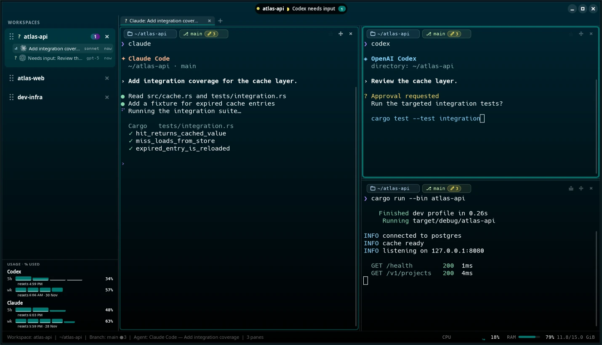

A workspace for every project
Keep your agent, tests and dev server in split panes. Switch projects while background work keeps running. After a restart, reopen your layout and resume supported agent sessions from the pane menu.
Open-source terminal for Linux & macOS
Run AI coding agents side by side. Keep projects in separate workspaces and jump straight to a pane when an agent needs you.



Agent integrations
Workspaces & agents
Set up a space for each project, switch between tasks, and jump straight to the pane that needs your attention.
Keep your agent, tests and dev server in split panes. Switch projects while background work keeps running. After a restart, reopen your layout and resume supported agent sessions from the pane menu.
Enable agent hooks to get desktop alerts for the events your agent reports. Select an alert to jump to the right pane.
Native terminal
Apply a Warp theme across the whole window or import your own. Find themes, actions and custom commands in the command palette.
Browse the theme guide
See reported 5-hour and weekly limits for active Codex and Claude Code sessions, including reset times.
Usage and setupChoose a Compose file from the pane. See service status and ports, rebuild or restart services, and get an alert if one crashes.
Compose guideUse the oxi CLI to create workspaces, split panes, read output or send notifications over a private local socket.
Quick start
Give each project a workspace. Create one with Ctrl+Shift+N on Linux or ⌘T on macOS.
Split right with Ctrl+Shift+E or ⌘D. Run an agent in one pane and your tests or server in the other.
Open Settings → Notifications → Agent Hooks, or run this command to set up supported agents on your PATH.
oxi hooks install --all
For Codex, restart the CLI after setup and review and trust the Oxishell hooks in /hooks. Older Codex releases can use the completion-only integration.
Download
Choose the package for your desktop or install from the command line.
Ubuntu 24.04+ or Debian 13+ · x86-64
Download .debRun from the download folder
sudo apt install ./oxishell_amd64.deb
Open Oxishell from your app menu. The package installs the desktop app and the oxi CLI. Supports Wayland and X11.
Disk images for Apple silicon and Intel
Or install with Homebrew
brew install --cask Ajinkyasp99/oxishell/oxishell
If you use a disk image, drag Oxishell into Applications. The app is signed ad hoc. See the first-launch instructions if macOS blocks it.
Quit Oxishell before updating. Your settings, workspaces, themes and agent hooks carry over.
brew update and then brew upgrade --cask oxishell.Enable Settings → Notifications → Check for updates for release notices. Oxishell leaves installation to you.
Full update instructionsOxishell is built with Rust, GTK and VTE. It runs without an Oxishell account or telemetry. Read the privacy and security notes